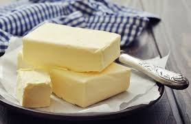

Sunny-side up egg recipe
Sunny-side-up eggs are eggs only cooked on one side, leaving the
yolk intact and runny. The dish is said to resemble the shining sun.
Ingredients/equipment
- butter
- 1 fresh egg
- seasoning of choice
- nonstick pan

Instructions
- Heat up and distribute butter on the pan on med-high heat for a couple minutes.
Crack a large egg into a separate bowl.
- Slide the egg into the pan on med-low heat and immediate cover with a lid.
Cook without disturbing the eggs until the whites are set (2-3 minutes).
- Slide the eggs out the pan, season with salt and ground pepper, and serve.

Back to home page
Did you like this recipe?